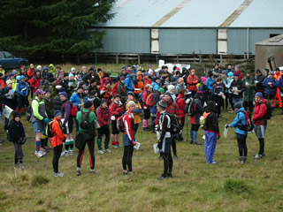

| Heights of Winter 2010 Saturday 26th June Organiser's Reflections Grant Hunter |
As one competitor observed, ‘Shade of Grey’ captured the day perfectly. Ominous cloud and rain encircled us geographically, and had been there for days before and then persisted for many more afterwards. 
- What better commentary on the course planning and terrain choice than than samples of feedback from participants:
- “… I particularly liked the number of controls. It made planning so much more important as there was little chance of clearing the course. The organisation around the domain hall was excellent ... plenty of planning room (I'm used to doing it in the back of a car!), and a scrumptous banquet afterwards.” (RJ)
- “Thanks … and to Pat for not hiding the controls (So much more enjoyable not having to start a treasure hunt when you are inside the control circle).” (RE)
- “… I know events take a huge amount of work and it often goes unnoticed. HOW is a great event and very cheap! I thought the course was really good, I enjoyed the smaller map and lots of controls quite close together. It's super fun when you can average 4-6 controls per hour. It's motivating and keeps you focused.” (NF)
The attraction of rogaining for me extends beyond the navigation event. We strongly depend on rural communities - especially landowners - and if we can get this relationship right we can be an exemplar of great relationships between (largely) farming and urban recreational groups. Let’s face it, the media persistently portrays such relationships as strained. Once again, we had a gracious and welcoming response from the dozen landowners. A new achievement this year was having a small rural school – Broomfield – approach us to see if they could work with us on a rogaine. They got a sure-fire fund raiser and we had less cold-calling to do. How good is that?
A great reward for an organizer can come when quietly observing the finish line, as I did. Smiling and appreciative people. Despite dodgy weather, I think only two teams finished before 8.30, with most coming in within 15 minutes of close off. From the others on course set up and the on-the-day team – Phil Bones, Pat, Pete Squires, Douglas Woods, Bill Kennedy, Bayne and Anne Hunter – well done.
Several teams called for help, proving the worth of cell phones. The Red Cross team of Andrew and Tom promptly attended to a shoulder dislocation and a severe barbed-wire gash. We also retrieved three teams - less excusably - for which 9 pm arrived while they were still far away from the finish line. Our choice of waterproof map did not measure up to what we need for the World Champs in November, so it’s back to the drawing board there.
Phil Bones (backed up by Pete Squires and Jac Woudberg) was inducted into the workings of Navlight, our electronic scoring system. Though reinforcing his proficiency, he admitted to sometimes clinging to the edge of his seat on Saturday night. Facing a line-up of tired, wet and expectant rogainers awaiting their hard-won points score can be a little intimidating.
Most readers know – but not all do – that Navlight is the invention of our own President Pete Squires. Pete also designed and actually assembles all the component systems – hard and soft. Navlight is also used for rogaining in Australia.
Grant Hunter, Event Organiser
Footnote from Broomfield School
Broomfield School would like to thank the organisers for including us in your event. We really enjoyed meeting and talking to the competitors, who all looked very tired and a bit cold but also very pleased with the event. We haven't done a final tally yet, but because a lot of our ingredients were donated we hope to raise over $3000, a large amount for a small school like ours. The rogaining also brought our whole community together. Thank you.
Lynette Horn, The Friends of Broomfield School